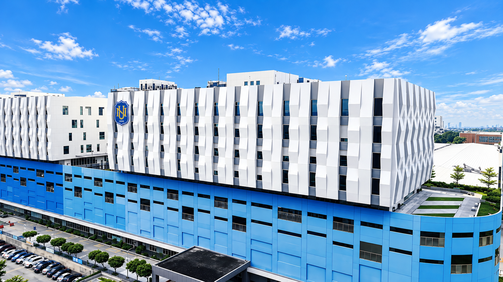

About SET Days
SET Days is a yearly campus event organized with the School of Engineering and Technology where students from different programs gather to show their talents and compete in friendly matches. It gives everyone a break from regular classes to cheer for their course and meet other students.
Activities range from basketball and volleyball games to esports tournaments, quiz bees, workshops, and stage performances. Each program forms its own team so every game adds excitement and points toward the overall championship.
SET Days 2026 will happen on December 2 to 4, 2026 at National University Fairview in Quezon City. More than winning medals, the goal of the event is teamwork, sportsmanship, and unity across the campus.
Purpose of the Event
To build camaraderie, healthy competition, and school pride among students across all programs.
Intended Participants
Open to NU Fairview students, faculty members, school staff, and invited campus guests.
Date and Place
December 2 - 4, 2026
National University Fairview, Quezon City
Proposed Event Activities
Here are the proposed competitions and workshops lined up for this year's celebration:
Featured Activities
- Basketball Showdown - Men's and women's inter-program tournament
- Volleyball League - Friendly program-versus-program court matches
- Mobile Legends Cup - 5v5 mobile esports bracket
- Valorant 5v5 Invitational - Team tactical PC gaming match
- Tech Quiz Bee - Trivia competition on computing, science, and general tech
- Robotics Challenge - Obstacle course run for student-built robots
- Intro to Web Development Workshop - Hands-on beginner session on HTML and CSS
- Cheer and Dance Showcase - Group performances showing program spirit
How to Join an Activity
- Pick the competition or workshop you want to join from the list above.
- Ask your class or program representative if you are joining a team event or solo slot.
- Fill out the sign-up sheet with your name, student number, and program.
- Attend the short orientation or rules briefing before your event starts.
- Show your NU Fairview student ID at the venue check-in table.
Event and Tech Terms
- Bracket
- A tournament chart that shows which teams play against each other in every round.
- Esports
- Organized video game competitions played by teams or individual players.
- Hackathon
- A timed coding or building activity where students create a working project together.
- Seeding
- Arranging teams in a bracket ahead of time so top teams do not face each other right away.
Three-Day Event Schedule
Below is the proposed schedule for December 2, 3, and 4, 2026. Please note that all times and venues are sample details for this project.
| Date | Time | Activity | Venue |
|---|---|---|---|
| Dec. 2 | 9:00 AM | Opening Program and Parade of Programs | University Quadrangle |
| Dec. 2 | 1:00 PM | Basketball Showdown and Volleyball League | Gymnasium |
| Dec. 2 | 4:00 PM | Valorant 5v5 Invitational (Eliminations) | Esports Room |
| Dec. 3 | 10:00 AM | Guest Speaker Talk: Engr. Maria Santos | Auditorium |
| Dec. 3 | 1:00 PM | Intro to Web Development Workshop | Computer Laboratory |
| Dec. 3 | 3:30 PM | Robotics Challenge and Mobile Legends Qualifiers | Engineering Hall |
| Dec. 4 | 9:00 AM | Tech Quiz Bee Finals | Auditorium |
| Dec. 4 | 1:00 PM | Esports Grand Finals (Mobile Legends) | Esports Room |
| Dec. 4 | 4:30 PM | Cheer and Dance Showcase and Awarding Ceremony | University Quadrangle |
Event Venue and Interactive Guide
Our proposed venue is the National University Fairview campus in Quezon City. Events will be spread across the gymnasium, auditorium, computer laboratories, esports room, and main quadrangle inside the campus building.
Click different parts of the campus image below to jump to a section of the page:

Image Map Guide: Left Wing -> Activities | Main Building -> Schedule | Right Courtyard -> Featured | Blue Base -> How to Join
Featured Activities and Guests
Don't miss these main highlights happening during SET Days 2026:
Esports Grand Finals
The top two program teams go head-to-head in a best-of-five Mobile Legends championship match with live student commentary.
Schedule: December 4, 1:00 PM
Venue: Esports Room
Award: Championship Trophy and Medals
Guest Speaker: Engr. Maria Santos
A fictional NU alumna and software developer shares practical tips on how joining school tech events helped prepare her for the IT industry.
Schedule: December 3, 10:00 AM
Venue: Auditorium
Topic: From Student Projects to Tech Careers
Student Organization Booths
Different student organizations from SET programs will set up booths with mini-games, org merch, and project demos for visitors.
Schedule: December 2 - 4 (All Day)
Venue: University Quadrangle
Highlights: Mini-games, booths, and student exhibits
Participation Guidelines
Want to represent your program or join a workshop? Follow these simple guidelines:
- Check general university rules and announcements on the National University Official Website.
- Coordinate with your program's student council or class representative to join your course roster.
- Submit your completed registration form on or before November 27, 2026.
- Wait for your team confirmation slip and official match time.
- Arrive at your assigned venue at least 30 minutes early and wear or bring your school ID.
Sample Registration Confirmation
======================================== SET DAYS 2026 - REGISTRATION SLIP ======================================== Team Name : Bulldogs IT Squad Activity : Mobile Legends Cup Program : BS Information Technology Match Date : December 3, 2026 (3:30 PM) Venue : Engineering Hall Reminder : Please bring your NU ID. ========================================
Contact Information
For questions about sign-ups or schedules, you can reach the proposed SET Days 2026 student committee:
Overall Event Chair
Angelica Reyes
School of Engineering and Technology
Sports Coordinator
Marco Dela Cruz
Basketball and Volleyball Events
Esports and Tech Coordinator
Jasmine Tan
Esports, Quiz Bee, and Workshops
Email us at: setdays2026@example.com
Office: SET Student Council Room, NU Fairview, Quezon City